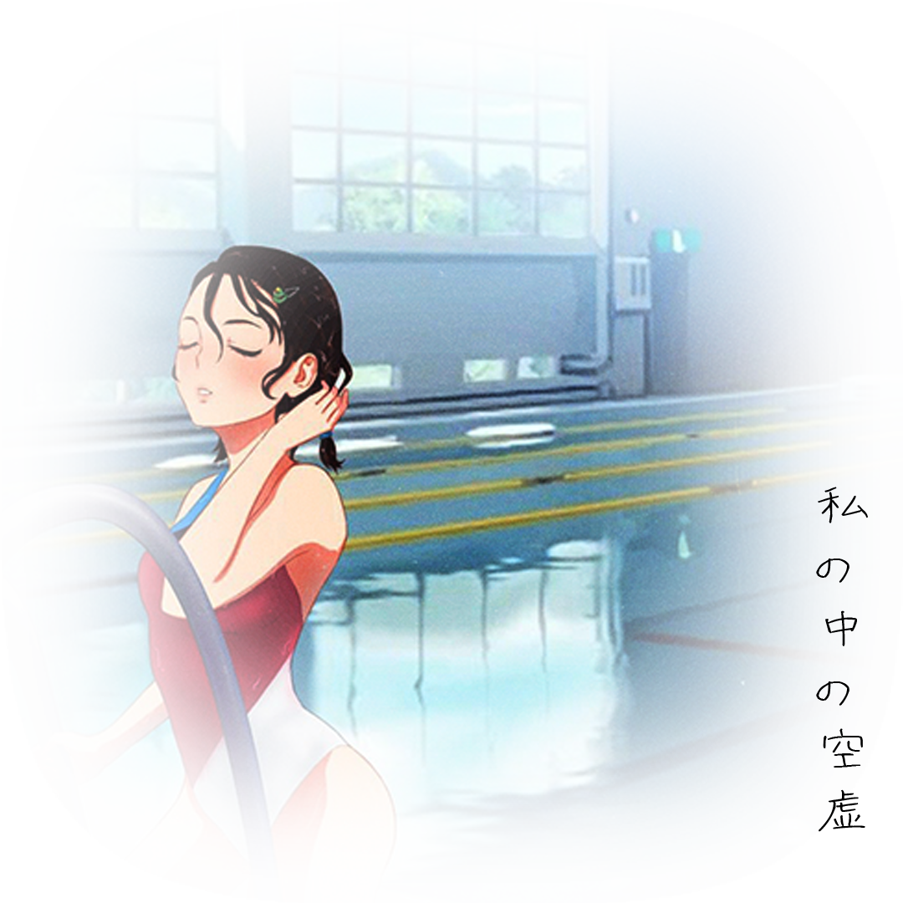

неизвестный пользователь

ВОЗМОЖНОСТЬ ГЛУБИНЫ

> Как далеко можно зайти только из-за удовлетворения своих потребностей? Любопытства или одиночества. Пока я погружаюсь всё глубже и глубже, информация и чувства заполняют пространство, и последствий становится совсем не видно. Но когда я касаюсь дна , задаю себе вопрос: действительно ли мне всё это было нужно? Вода кажется прозрачной, но чем её больше, тем сложнее разглядеть то, что она скрывает..
...я погружаюсь в воду так глубоко, как только возможно, и не хочу, чтобы это состояние заканчивалось. Я пытаюсь найти место, где, как помню, мне нравилось быть раньше, но ничего не нахожу. Однако всё выглядит так же, как несколько лет назад. С каждым вдохом моё дыхание становится глубже. Тело начинает покрываться льдом. Мне очень холодно. В этот момент я чувствую, что воздуха не хватает. Я слышу голос, который говорит родителям, что это мои последние мгновения. А потом я засыпаю.
Я теперь - просто информация
Спасибо за просмотр!